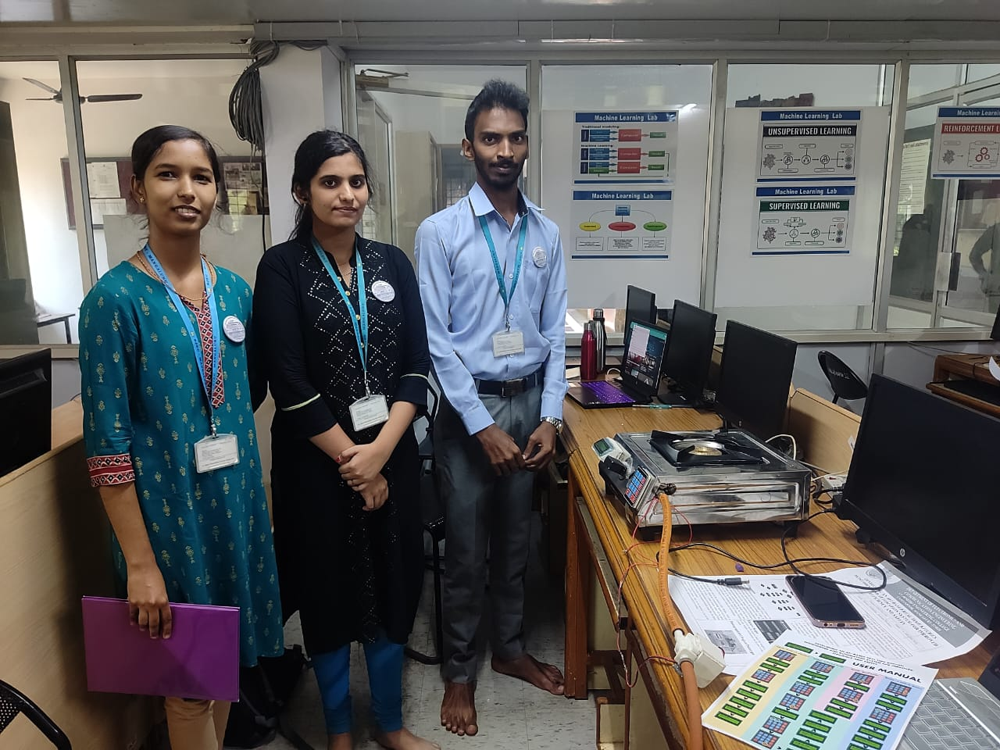
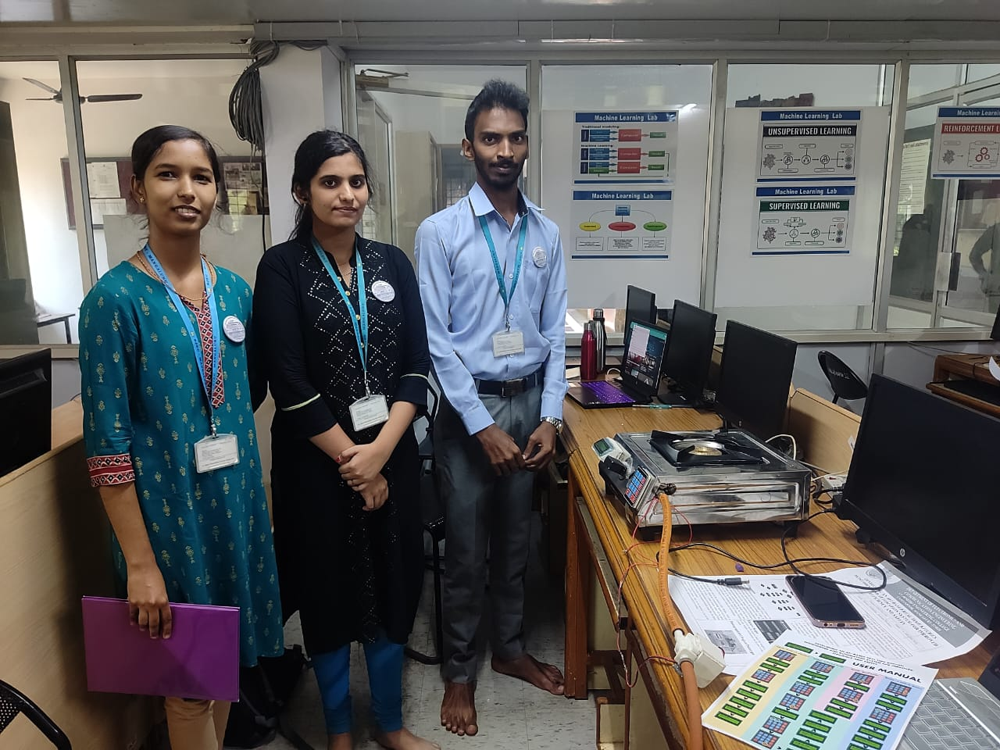
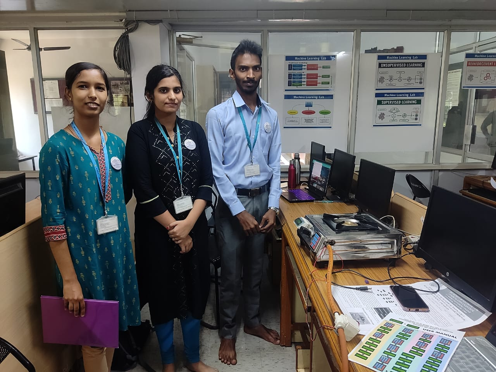
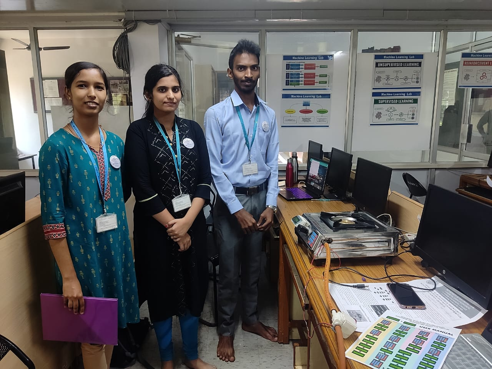

.jpeg) 



4 students from the E&C department have devised a very innovative method of preventing gas leakage and also timer-based cooking. this team includes Sannidhi, Thejasvi, Nikhil T A and Melroy Sequeira who were constantly guided by Ms. Florence Nishmitha. Their project aims at developing an IOT based real time kitchen monitoring and automation system for improved efficiency and safety. This team aims at providing a very unique solution to a problem unnoticed by many. They developed a system which mainly controls and avoids wastage of gas. It detects the gas leakage and automatically cuts the supply. The second problem that they tackled was to prevent milk spillage and the system senses the near boiling point of milk and turns off the stove. They have presented 4 modes of controlling the sensors and the user can control the different modes through hex keypad as well as WhatsApp. The team plans to modify their product by inserting a load cell that could check the weight of the cylinder and based on the weight, notifications can be sent to user alert for booking the next cylinder.
Participated at TECHNOVA 2023
This team showed their excellent skill by securing the 1st place at the I2 CONNECT project exhibition 2023 organized by the IEEE Mangalore Substation at the JNN College of Engineering, Shivmogga.